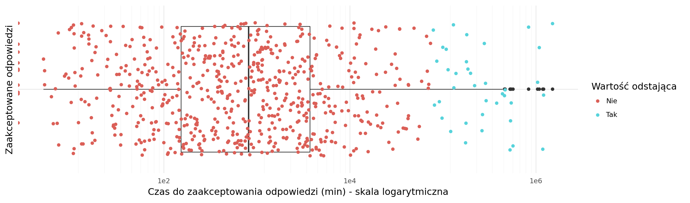
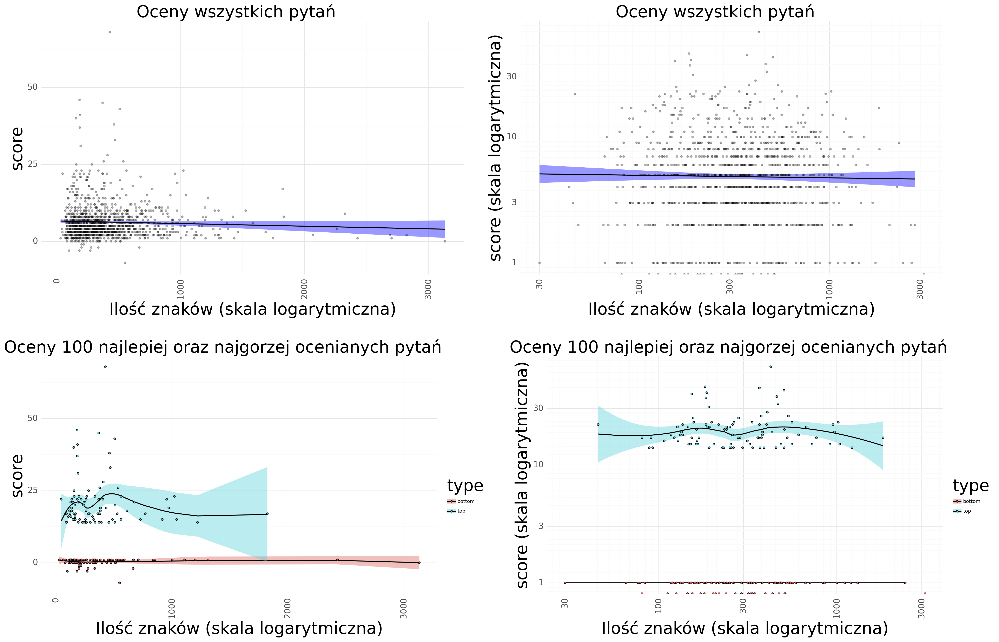
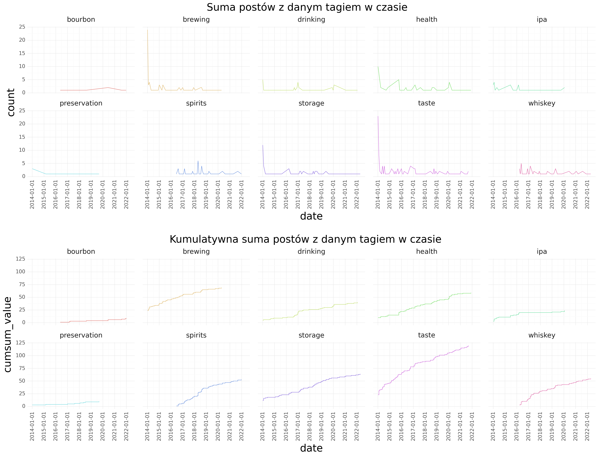

3 Analiza danych
3.1 Analiza aktywności użytkowników na forum
Jako pierwsze postanowiono zbadać czy forum jest aktywne. W tym celu liczbę postów zagregowano w miesięczne insterwały i zliczono ich ilość. Pierwsza wiadomość pojawiła się na forum 2014-01-21 natomiast ostatnia 2022-06-05. Na przestrzeni tych ~8,5 roku pojawiło się 3769 postów. Z Rys. 3.1 widać, że zainteresowanie forum spadało w czasie. W rekordowych pierwszych 2 miesiącach umieszczano ich odpowiednio 413 oraz 190, natomiast pod koniec badanego okresu wartości często nie przekraczały 10.
Stosunek ilości odpowiedzi do zadawanych pytań (rato) rósł do roku 2021, w którym to zaczęto odnotowywać spadek. Na wzrost ratio miała wpływ zmniejszająca się ilość zadawanych pytań (maleje próba badana) co zostało przedstawione na Rys. 3.2. Patrząc na wartości średnie tylko co drugie pytanie uzyskiwało odpowiedź (ratio 0.48 +/- 0.22). Ogólne statystyki stosunku pytań do dopowiedzi w czasie zostały przedstawione w Tab. 3.1.
| średnia | odchylenie standardowe | min | max | mediana | |
|---|---|---|---|---|---|
| 0 | 0.476316 | 0.219824 | 0.0 | 1.5 | 0.444444 |
3.2 Dynamika oraz statystyki udzielanych odpowiedzi
Twórcy pytań na forum mają możliwość wybrania odpowiedzi, która jest najtrafniejsza i zawiera poprawną odpowiedź. Te odpowiedzi nazywane są zaakceptowanymi odpowiedziami. Zbadano jak często najwyżej oceniona odpowiedź nie była zaakceptowaną odpowiedzią.
Okazało się, że w przypadku pytań, które posiadały jakąkolwiek odpowiedź, około 12.7% (646) przypadków najlepiej ocenianych odpowiedzi nie było tą, która została zaakceptowana przez autora.
Następnie porównano oceny odpowiedzi zaakceptowanych z pozostałymi odpowiedziami a statystyki przedstawiono w Tab. 3.2 oraz Rys. 3.3.
Pośród odpowiedzi na zadawane pytania wyróżniono 3 kategorie:
- odpowiedź zaakceptowana (
is_accepted=True) - odpowiedź niezaakceptowana (
is_accepted=False) - odpowiedź niezaakceptowana ale równocześnie brak jest zaakceptowanej odpowiedzi na to pytanie (
is_accepted=None)
Z analizy wynika, iż zaakceptowane odpowiedzi mają średnio wyższe oceny użytkowników (6,39) niż pozostałe oceny (2.75 - is_accepted=None; 2.58 - is_accepted=False), co było oczekiwanym wynikiem.
Następnie zbadano jak szybko od pojawienia się pytania, pojawia się zaakceptowana odpowiedź. Dla wszystkich pytań na tym forum jest to średnio 25244 minuty, ale wartość środkowa (753) sugeruje, że średnia może być zaburzona. W celu obliczenia średniej nie zaburzonej tak dużymi wartościami odstającymi odrzucono wartości znajdujące powyżej 6 odchyleń standardowych od średniej (75894 minut). Tym razem uzyskano wartość 3988 minut (~66,5 godziny), przy wartości środkowej 628 (~10,5 godziny).
Rozkłady wartości przedstawiono na Rys. 3.4 oraz w Tab. 3.3 dla całego zbioru danych oraz Tab. 3.4 po odrzuceniu wartości odstających.
| is_accepted | średnia | odchylenie standardowe | min | max | mediana | |
|---|---|---|---|---|---|---|
| 0 | None | 2.755169 | 3.181837 | -5 | 30 | 2 |
| 1 | True | 6.395044 | 5.915949 | 0 | 46 | 5 |
| 2 | False | 2.584169 | 2.735329 | -4 | 26 | 2 |

| średnia | odchylenie standardowe | min | max | mediana | |
|---|---|---|---|---|---|
| 0 | 25244.943571 | 123338.63251 | 0.0 | 1506239.05 | 753.25 |
| średnia | odchylenie standardowe | min | max | mediana | |
|---|---|---|---|---|---|
| 0 | 3988.821096 | 9775.983836 | 0.0 | 73465.9 | 628.72 |
3.3 Retencja użytkowników
W całej historii forum zarejestrowanych zostało 8948 użytkowników, z czego jedno konto jest kontem bota. Miarą retencji użytkownika na forum określono czas od utworzenia konta to ostaniej zamieszczonej wiadomości. Wśród 50 najdłużej aktywnych kont zidentyfikowano konto z wynikiem aż 3052 dni a konto z ostatnim indeksem w tej grupie miało wynik 2128 dni. Jednakże patrząc na całą populację, wartość środkowa wyniosła 11, a 50% wartości mieści się pomiędzy 0 a 594 dniami. Użytkownicy z wartością 0, są to najprawdopodobniej użytkowicy, którzy zadali jedyne pytanie na forum w dniu założenia konta (410 użytkowników). Czas na forum najdłużej aktywnych użytkowników został zwizualizowany na Rys. 3.5. Dodatkowo okazało się, że 7691 (86%) kont było biernymi użytkownikami forum i nidgy nie dodało żadnego posta.
3.4 Statystyki najwyżej oraz najniżej ocenianych pytań
Zbadano statystyki zadawanych pytań. Użytkownicy forum mogą oceniać pojawiające się tam pytania czego miarą jest wartość score. Sprawdzono, czy długość zadanego pytania ma wpływ na jego ocenę.
Średnia długość pytania wyniosła 415 znaków (+/- 330) a wartość środkowa 331 znaków. Najdłuższe pytanie posiadało 3133 znaki a najkrótsze jedynie 30. Statystyki przedstawiono w Tab. 3.5.
| średnia | odchylenie standardowe | max | min | mediana | |
|---|---|---|---|---|---|
| 0 | 415.863676 | 330.836043 | 3133 | 30 | 331 |
Średnio pytanie było oceniane na wartość 6.28 (+/-5.88) a wartość środkowa wyniosła 5. Najlepiej oceniane pytanie miało ocenę 67 a najgorzej -7. Statystyki zestawiono w Tab. 3.6.
| średnia | odchylenie standardowe | max | min | mediana | |
|---|---|---|---|---|---|
| 0 | 6.278804 | 5.876114 | 68 | -7 | 5 |
Zależność pomiędzy wartością score a długością wiadomości przedstawiono na Rys. 3.6. Ze względu na obecność dużej ilości wartości odstających obie wartości przedstawiono również w skali logarymicznej.
Nie wykryto korelacji pomiędzy tymi dwoma zmiennymi. Współczynnik korelacji wyniósł -0.048 oraz -0.018 dla wartości zlogarytmowanych.
Postanowiono dodatkowo zbadać dwie podgrupy danych dla pytań najlepiej oraz najgorzej ocenianych. Wyodrębniono po 100 pytań z każdej z grup. Wyniki dla tych grup przestwationo na Rys. 3.6 (dolny panel) oraz w Tab. 3.7 i Tab. 3.8.
W podgrupie najlepiej ocenianych pytań średnia ocena wyniosła 20.6 +/- 8.5 a w podgrupie najgorzej ocenianych 0.4 +/- 1.2. Rozdzielność tych statystyk dla tych grup była oczekiwanym wynikiem.
Statystyki długości pytań nie odbiegają od siebie w znaczący sposób (średnie 349 +/- 275 najlepiej oceniane oraz 389 +/- 424 najgorzej oceniane) sugerując iż to długość pytania nie ma znaczącego wpływu na jego ocenę.

| type | średnia | odchylenie standardowe | max | min | mediana | |
|---|---|---|---|---|---|---|
| 0 | top | 349.08 | 275.088587 | 1823 | 46 | 261 |
| 1 | bottom | 389.26 | 424.654836 | 3133 | 30 | 270 |
| type | średnia | odchylenie standardowe | max | min | mediana | |
|---|---|---|---|---|---|---|
| 0 | top | 20.6 | 8.551685 | 68 | 14 | 18 |
| 1 | bottom | 0.4 | 1.206045 | 1 | -7 | 1 |
Zauważono również że najlepiej oceniane pytania są również częściej oglądane i mają więcej odpowiedzi niż pytania najgorzej oceniane (Rys. 3.7). Najlepiej oceniane pytania mają średnio 4 odpowiedzi podczas gdy najgorzej jedynie 1 (Tab. 3.9) oraz odpowiednio średnio 26289 i 475 wyświetleń (Tab. 3.10)
| type | średnia | odchylenie standardowe | max | min | mediana | |
|---|---|---|---|---|---|---|
| 0 | top | 3.96 | 2.581676 | 17 | 1 | 3 |
| 1 | bottom | 1.28 | 0.964836 | 4 | 0 | 1 |
| type | średnia | odchylenie standardowe | max | min | mediana | |
|---|---|---|---|---|---|---|
| 0 | top | 26047.65 | 76276.200191 | 648941 | 175 | 4715 |
| 1 | bottom | 495.56 | 1220.756292 | 9124 | 3 | 141 |
3.5 Analiza znaczników (tagów)
W celu identyfikacji tematów zapytań na forum przeanalizowano słowa kluczowe, którymi oznaczano pytania. Wyniki przedstawiono w postaci wykresu typu “Chmura słów” Rys. 3.8. Okazuje się, że użytkownicy najczęściej pytali o wina (134, ang. wine), smak (120, ang. taste), historię (85, ang. history) i o rekomendacje (76, ang. recommandation).
Tę samą analizę wykonano na grupie 100 najlepiej i najgorzej ocenianych pytań badanych w Sekcja 3.4. W pierwszej grupie najczęściej używano znaczników smak (17) oraz warzenie (14, ang. brewing), w drugiej natomiast najczęściej pytano o wina (20), rekomendacje (15) i zdrowie (12, ang. health).

Następnie sprawdzono, które ze znaczników nie tylko były najczęściej używane, lecz które generowały najwięcej wyświetleń. W tym celu zsumowano liczbę wyświetleń wszystkich zapytań na forum, w którym pojawił się dany znacznik (Tab. 3.11). Znaczniki taste oraz health generują najwięcej wyświetleń na tym forum w ilości 1349051 oraz 1316064, na dalszych miejscach znajdują się znaczniki preservation (686106), storage (558949) oraz whiskey(470841).
Zbadano również czy wykorzystanie najczęściej używanych znaczników zmieniało się w czasie istnienia forum. Z danych zaprezentowanych na Rys. 3.9 można zaobserwować że niektóre znaczniki takie jak spirits, bourbon czy whiskey zaczęły być używane dopiero około roku 2016 - około 2 lata po pierwszej wiadomości na forum. W danych zauważono również, że częstość używania znaczników jest skokowa. Może to być związane z ogólną małą ilością postów zamieszczanych na forum. Wyjątek stanowią najpopularniejsze znaczniki, takie jak taste czy health, których częstość występowania jest bardziej regularna.

3.6 Analiza tytułów postów
Dodatkową metodą, oprócz analizy znaczkików, którą można wykorzystać w celu zbadania tematów poruszanych na forum może być analiza najczęściej pojawiających się słów. Można do tego wykorzystać treść tytułów wiadomości jak i ich główną treść. W niniejszej pracy skupiono się na analizie treści tytułów wiadomości, jako że bardzo często zawierają one dużo słów kluczowych.
Tytuły wiadomości są nieustrukturyzowanymi ciągami znaków, z tego powodu do ich analizy wykorzystano powszechnie używane narzędzia stosowane przy analizach NLP (ang. Natural Language Processing). Proces zastosowanej tutaj analizy tekstu składał się z 4 kroków:
- Wyodrębnienia tokenów
- Usunięcia tokenów o długości znaku 1
- Usunięcia tokenów nie niosących informacji o treści (ang. stop words)
- Ujednolicenia różych form danego wyrazu poprzez zabieg stemming’u (ang. stemming), mającego na celu ucinanie końcówek wyrazów (tokenów) i pozostawieniu jedynie jego wartości bazowej.
Przykładowa tabela wizualizująca tokeny surowe w porównaniu do tokenów po odfiltrowaniu słów typu stop words oraz tokenów krótszych niż 1 zaprezentowano na Tab. 3.12
| 0 | |
|---|---|
| title | What is a citra hop, and how does it differ from other hops? |
| words_token | [what, is, citra, hop, and, how, does, it, differ, from, other, hops] |
| words_no_stop | [citra, hop, differ, hops] |
| words_stem | [citra, hop, differ, hop] |
Dzięki zabiegowi stemmingu otrzymywany jest bardziej jednorodny zestaw danych. Liczba unikalnych tokenów została zredukowana z 2055 do 1680.
Następnie zliczono, które tokeny pojawiają się w największej ilości tytułów i zaprezentowano w Tab. 3.13. Najczęściej używanymi tokenami były tokeny beer (476), wine (152) oraz drink (105). Wyniki pozostają w zgodzie z wnioskami uzyskanymi poprzez analizę znaczników.
| words | count | |
|---|---|---|
| 0 | beer | 476 |
| 1 | wine | 147 |
| 2 | drink | 104 |
| 3 | alcohol | 88 |
| 4 | differ | 72 |
| 5 | bottl | 68 |
| 6 | use | 50 |
| 7 | tast | 47 |
| 8 | brew | 43 |
| 9 | make | 41 |
| 10 | good | 33 |
| 11 | cocktail | 29 |
| 12 | age | 27 |
| 13 | ale | 26 |
| 14 | recommend | 26 |